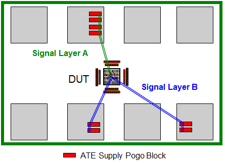

Sense line routing
High-current low-voltage devices are sensitive to the voltage drop across the DUT board. They typically require power and sense, and similarly, GND and GND_sense pairs of DUT connections to sense the on-die voltage and to provide the desired voltage to the DUT.
First Priority
Route the sense and GND_sense lines like a differential pair to minimize ground bounce. Impedance does not matter in this case, since the response time is very slow. Therefore, it is sufficient to apply the minimum routing rules for copper to copper edge spacing and minimum trace width. To avoid crosstalk, spacing to adjacent signals or copper features should be 3 times the distance to the closest ground plane.
For general sense line routing rules and best practices see DPS layout rules for high frequency designs.
For UHC4 / UHC4T specific recommendations, refer to section Layout recommendations in UHC4 / UHC4T recommendations for use.
Second Priority
For ganged power supplies, if there is enough space, you can route each supply’s sense and GND_sense line pairs individually to the DUT.

Functional changes
- Introduced in SmarTest 7.2.2